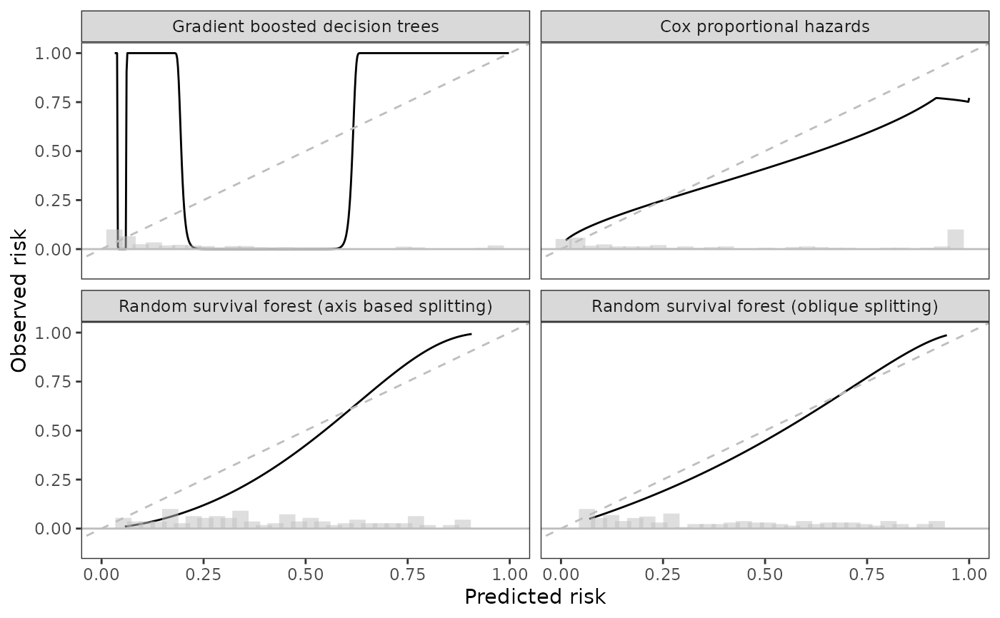

TODO: add description
scalib_hare(
scalib_object,
verbose = 0,
hare_penalty = NULL,
hare_max_dimension = NULL,
hare_prophaz = FALSE,
hare_additive = FALSE,
hare_linear_risk = FALSE,
hare_linear_time = FALSE,
hare_fit = NULL
)An object of class scalib
(see scalib).
(integer value) If 0, no output will be printed. If 1, some output will be printed. If 2, all output will be printed.
the parameter to be used in the AIC criterion. The method chooses the number of knots that minimizes -2 * loglikelihood + penalty * (dimension). The default is to use penalty = log(samplesize) as in BIC. The effect of this parameter is summarized in summary.hare.
maximum dimension (default is 6 * length(data)^0.2.
should the model selection be restricted to proportional hazards models?
should the model selection be restricted to additive models?
(logical value) should the effect of risk be linear?
(logical value) should the effect of time be linear?
hare object. If fit is specified, hare adds basis functions starting with those in fit.
an object of class scalib
# packages
library(ggplot2)
library(tidyr)
library(dplyr)
#>
#> Attaching package: ‘dplyr’
#> The following objects are masked from ‘package:data.table’:
#>
#> between, first, last
#> The following objects are masked from ‘package:stats’:
#>
#> filter, lag
#> The following objects are masked from ‘package:base’:
#>
#> intersect, setdiff, setequal, union
sc <- scalib(pred_risk = pbc_scalib$predrisk,
pred_horizon = 2500,
event_time = pbc_scalib$test$time,
event_status = pbc_scalib$test$status)
sc_hare <- scalib_hare(sc)
print(sc_hare)
#>
#> Survival calibration object with prediction horizon of 2500
#>
#> -- Input data ----------------------------------------------------------------
#>
#> event_time event_status prop_hazard rsf_axis gradient_booster rsf_oblique
#> <int> <num> <num> <num> <num> <num>
#> 1: 400 1 0.9990 0.9026 0.9351 0.9463
#> 2: 4500 0 0.4272 0.3072 0.0524 0.3680
#> 3: 1925 1 0.8286 0.4722 0.2342 0.5982
#> 4: 1832 0 0.0358 0.1474 0.0422 0.1460
#> 5: 2466 1 0.0392 0.1925 0.0568 0.1558
#> ---
#> 134: 1300 0 0.1509 0.1783 0.0629 0.1669
#> 135: 1293 0 0.1805 0.3466 0.1299 0.2416
#> 136: 1250 0 0.9823 0.4743 0.3254 0.5727
#> 137: 1230 0 0.0182 0.0589 0.0322 0.0637
#> 138: 1153 0 0.0718 0.1637 0.0527 0.1220
#>
#>
#> -- Output data -------------------------------------------------------------
#>
#> Key: <._id_.>
#> ._id_. hare_ici hare_e50 hare_e90 hare_emax hare_data_plot
#> <char> <num> <num> <num> <num> <list>
#> 1: gradient_booster 0.5104 0.4045 0.9358 0.969 <data.table[500x2]>
#> 2: prop_hazard 0.1008 0.0454 0.2404 0.248 <data.table[500x2]>
#> 3: rsf_axis 0.0999 0.1068 0.1335 0.836 <data.table[500x2]>
#> 4: rsf_oblique 0.0417 0.0449 0.0622 0.065 <data.table[500x2]>
#> 1 variable not shown: [hare_data_smry <list>]
#>
data_gg <- sc_hare$data_outputs |>
select(._id_., hare_data_plot) |>
unnest(hare_data_plot)
data_bins <- predrisk_bin_segments(sc_hare, bin_count = 30) |>
mutate(._id_.)
id_labels <- c(prop_hazard = "Cox proportional hazards",
rsf_axis = "Random survival forest (axis based splitting)",
gradient_booster = "Gradient boosted decision trees",
rsf_oblique = "Random survival forest (oblique splitting)")
ggplot(data_gg) +
aes(x = predicted, y = observed) +
geom_line() +
geom_abline(col = 'grey', linetype = 2) +
geom_hline(yintercept = 0, col = 'grey') +
theme_bw() +
theme(panel.grid = element_blank()) +
coord_cartesian(xlim = c(0, 1),
ylim = c(-0.1, 1)) +
geom_segment(data = data_bins,
size = 4,
alpha = 0.50,
col = 'grey',
mapping = aes(x = x,
y = y,
xend = xend,
yend = yend)) +
facet_wrap(~._id_., labeller = labeller(._id_. = id_labels)) +
labs(x = 'Predicted risk', y = 'Observed risk')
